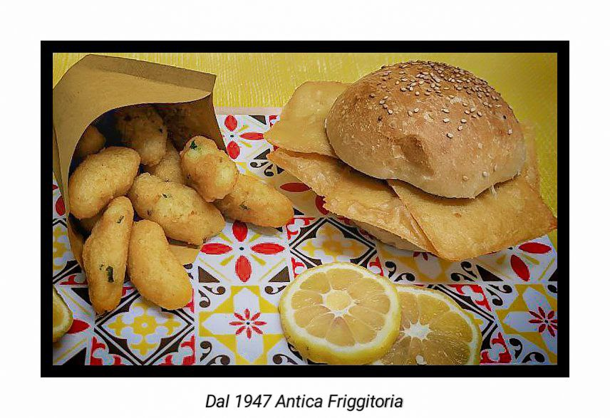
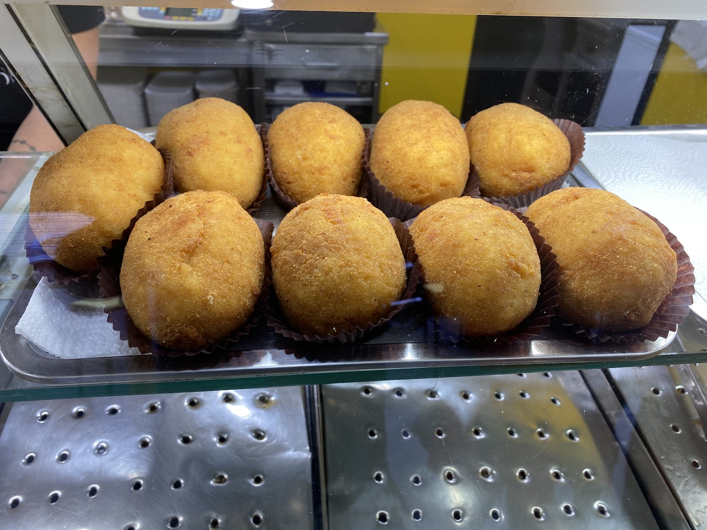
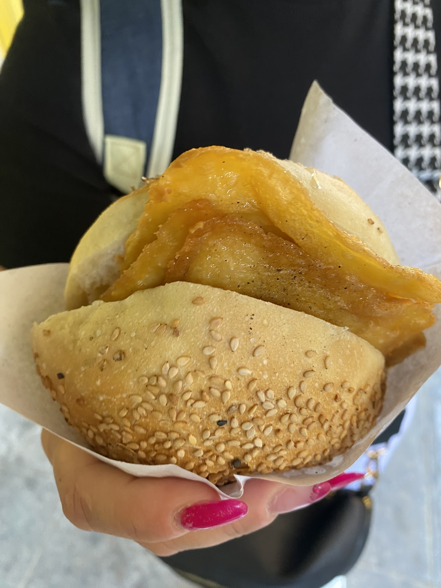
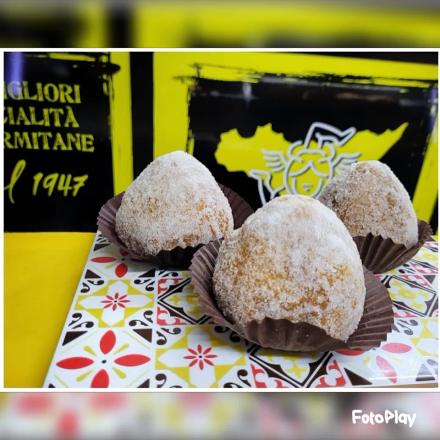

Panelle, crocché, arancine e rascatura: il chiosco giallo e nero che frigge da tre quarti di secolo. Palermo's yellow-and-black fry kiosk, at it since 1947.
Il nome dice tutto: qui si frigge dal 1947. Panelle di ceci, crocché di patate, arancine e la rascatura — quella vera, fatta con quel che resta dell'impasto, come vuole la tradizione delle friggitorie palermitane.
The name says it all: frying since 1947. Chickpea panelle, potato crocché, arancine and the real rascatura — made from the last scrapes of the batter, the way Palermo's fry shops always did.
Si mangia sui fusti neri davanti al chiosco, col coppo in mano e il limone spremuto sopra.

Il coppo si compone a voce, al banco — i prezzi sono esposti al chiosco. Build your cone at the counter — prices are posted at the kiosk.
le frittelle di ceci, da sole o nel pane
patate, menta e buccia croccante
alla carne e non solo, dalla vetrina calda
il fritto povero che i palermitani conoscono
la mafalda al sesamo, riempita al momento
la sorpresa zuccherata di fine giro
Colazione dei fritti dalle 7 del mattino — come si usa solo a Palermo.
Dal nostro listino esposto — sì, la birra piccola costa un euro. From our posted board — yes, the small beer is one euro.

"Got the arancina which was great" — la vetrina parla da sola.

La mafalda al sesamo con le panelle calde, mangiata in piedi.

Arancinette zuccherate sulla maiolica gialla del chiosco.
"The first food we had when we arrived in Sicily was here — and we made sure to visit again before leaving. Excellent taste, affordable."
"Perfect for a quick beer and lunch. The Rascatura were really tasty, the Arancina — meat and more."
"Really nice food. Got the arancina which was great."
★ 4,5 / 5 — 255 recensioni su Google
| Lunedì – Venerdì | 7:00 – 19:30 |
| Sabato | 7:00 – 18:00 |
| Domenica | Chiuso · Closed |
Via Niccolò Palmeri 4, 90133 Palermo
Ordinate su WhatsApp e il coppo vi aspetta caldo. Order on WhatsApp and your cone waits for you hot.
💬 WhatsApp 📞 329 839 8377 Apri in Maps